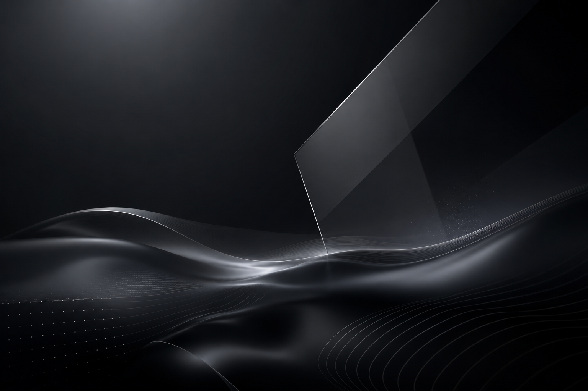

01
Digital Platforms
Minimalist, mobile-first websites precision-engineered to turn visitors into confirmed appointments.

We engineer fast websites, run disciplined marketing, and deploy AI automation for service businesses. Everything you need to grow, with none of the friction.
Clear · Functional · Human
Four integrated disciplines engineered to remove friction from your business—from a customer's first click to their final booking.
Minimalist, mobile-first websites precision-engineered to turn visitors into confirmed appointments.
Managed hosting, proactive maintenance, and search optimisation so you never have to think about your website again.
Targeted Meta Ads and intelligent content strategies that generate consistent customer flow without relying on hype.
Intelligent workflows and WhatsApp AI that instantly qualify leads and book appointments while you sleep.
View our processYou don't need more software. You need a system that actually gives you time back. We build AI assistants that answer questions, qualify leads, and follow up—operating seamlessly in the background so you can focus on the work only you can do.

Starting from
R1,500
AI WhatsApp Assistant
Lead Qualification
Automated Follow-Ups